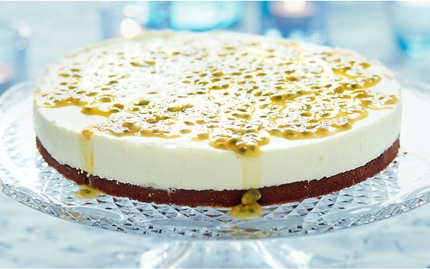

Malins godaste tårta
VIT CHOKLADMOUSSETÅRTA MED PASSIONSFRUKT

På en mörk, mjukseg botten vilar ett snövitt täcke av vit chokladmousse som toppas med passionsfrukt. Kan det bli godare?
Ingredienser
- 300 g mandelmassa
- 2 ägg
- 2 msk kakao
Fyllning:
- 200 g vit choklad
- 2 äggulor
- 2 msk citruslikör t ex cointreau
Garnering:
Gör så här:
- Sätt ugnen på 175°.
- Riv mandelmassan och rör ner ägg och kakao.
- Häll smeten i en smord och bröad form med löstagbar kant, ca 23 cm i diameter.
- Grädda kakan i nedre delen av ugnen ca 20 min.
- Låt kakan kallna och skär loss den från formen.
- Diska och torka formen och lägg ner kakan igen.
- Vispa grädden.
- Smält chokladen på svag värme i vattenbad så att den precis bara smälter.
- Vispa upp äggulorna i en stor bunke.
- Tillsätt chokladen under kraftig omrörning.
- Rör ner likören och sist grädden.
- Bred ut moussen över kakan i formen.
- Täck med plastfilm och frys i minst 3 tim.
- Dela passionsfrukten och skrapa ur fruktköttet.
- Häll det över moussen.
- Låt tårtan stå framme ca 30 min före serveringen.